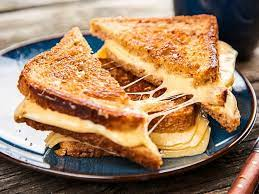

I FUCKING LOOOOOVE - Grilled Cheese

Description of the cheesy goodness
A grilled cheese (sometimes known as a toasted sandwich or cheese toastie) is a hot sandwich typically prepared by heating one or more slices of cheese between slices of bread, with a cooking fat such as butter, on a frying pan, griddle, or sandwich toaster, until the bread browns and the cheese melts.
The cheese dream, an open-faced grilled cheese sandwich, became popular in the U.S. during the Great Depression.[1] U.S. government cookbooks describe Navy cooks broiling "American cheese filling sandwiches" during World War II.[2]
Ingredients
- Scheiben Weißbrot (ersatzweise Graubrot oder Toast)
Butter (zimmerwarm)
- Scheiben Cheddar (ersatzweise Gouda
Stepidi Steps
- Weißbrot jeweils von einer Seite vollständig mit Butter bestreichen. Brote mit Cheddar belegen und zuklappen, dabei bleibt die gebutterte Seite außen.
- Sandwich mit gebutterte Seite nach unten in einer Pfanne bei mittlerer Hitze von jeder Seite ca. 5 Minuten goldbraun rösten. Bei Bedarf mit dem Pfannenwender das Brot zwischendurch andrücken oder mit einem Topf beschweren, sodass es gleichmäßig bräunt.